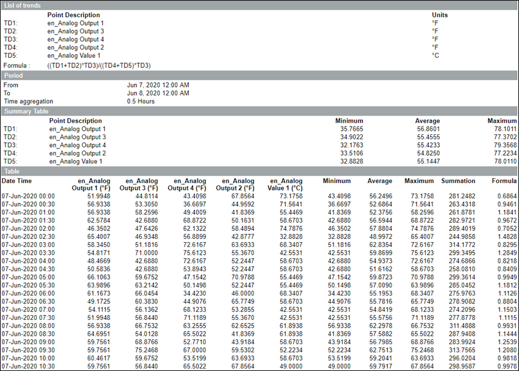

Trend Calculation For XLS Report
This report is designed to show values of a maximum of 5 different trend log objects, and also displays result of a custom calculation between them. It can be exported in the excel format, and various operations can be performed (for example, creating a chart). The report can be adjusted with different values to be specified in the Parameter dialog box, to allow the most frequent report content.
Sample Report

Indicator | Description for Table |
Asterisk - Red | Aggregation was not possible for the interval, so the last known aggregation is displayed. |